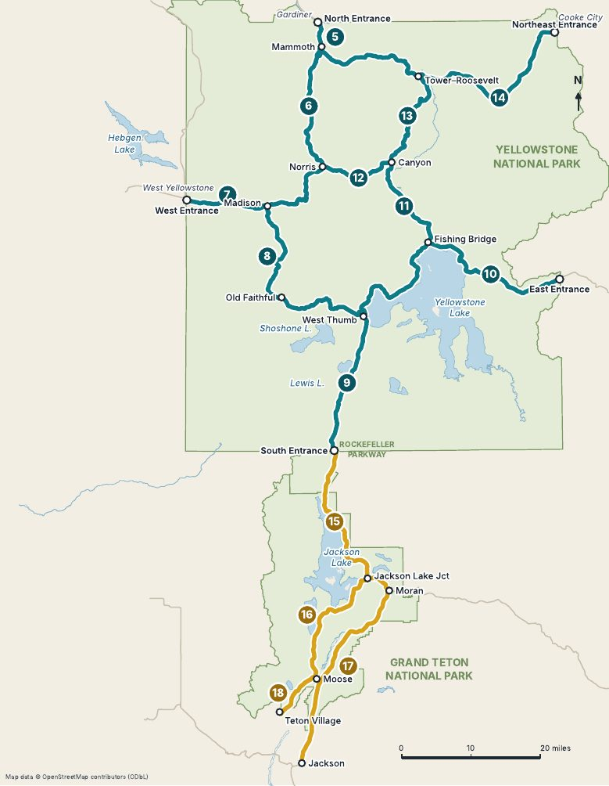

Yellowstone & Grand Teton Mile by Mile · 2027 Edition
Roads open late, bridges close for work, and a hot spring can change overnight. This page lists what has changed since the book went to press, so you can mark it on the right page before you drive.
The National Park Service publishes each year's road, lodge, campground and visitor center dates during the winter before the season. When the 2027 dates are out, they will be listed here next to the 2026 dates printed in the book.
| Yellowstone road | 2026 (NPS projected) | 2027 | Chapter |
|---|---|---|---|
| North Entrance to Northeast Entrance | Open all year | Open all year | 5, 14 |
| West Entrance–Madison, Madison–Old Faithful, Madison–Norris, Mammoth–Norris, Norris–Canyon | Apr 17 – Oct 31 | Not yet published | 6, 7, 8, 12 |
| East Entrance–Fishing Bridge (Sylvan Pass), Canyon–Bridge Bay | May 1 – Oct 31 | Not yet published | 10, 11 |
| South Entrance–West Thumb, West Thumb–Old Faithful, West Thumb–Lake, Tower-Roosevelt–Tower Fall | May 8 – Oct 31 | Not yet published | 9, 10, 13 |
| Canyon–Tower Fall (Dunraven Pass) | May 22 – Oct 12 | Not yet published | 13 |
| Beartooth Highway (US 212), outside the park | May 22 – Oct 12 | Not yet published | 19 |
These were closed or changing when the book went to press. Check them again the week you leave.
The parking lot, boardwalk and Firehole River at Biscuit Basin are closed to all travel until further notice, after a hydrothermal explosion on July 23, 2024 and a smaller one on June 13, 2026.
Closed since 2019. In December 2023 the park said the closure is permanent and the staircase will be removed.
Cars have used a temporary road on the historic Old Gardiner Road since October 30, 2022. In September 2026, construction of a rebuilt road was planned for 2027.
Closed since the 2022 flood "until further notice."
NPS temporarily closed Dunraven Pass and Sylvan Pass for hazardous driving conditions on October 22, 2026. These high roads close for weather more often than the rest of the park. Check the park's road status before you drive them.
In October 2026 the road between Moose and the Laurance S. Rockefeller Preserve was closed to all use for construction. Work continues into 2027, with closures in spring and fall and long delays in summer.
Closed to all use from May 2026 to June 2027 while a new trailhead is built about a mile from the old one. NPS suggests Granite Canyon, the Rockefeller Preserve or Taggart Lake instead.
Under construction from May 2026 to June 2027: expect 20-minute delays, not counting the wait at the entrance station.
Construction in October 2026, with 20-minute delays in both directions.
A 2026 project is turning the area into a pedestrian and cyclist zone with more parking.

Pages from the book to print and take with you.
Found a road closed, a trail reopened, or a stop that has changed? Send the chapter, the milepost from the book and what you saw, with the date. Checked corrections go on this page and into the next edition.